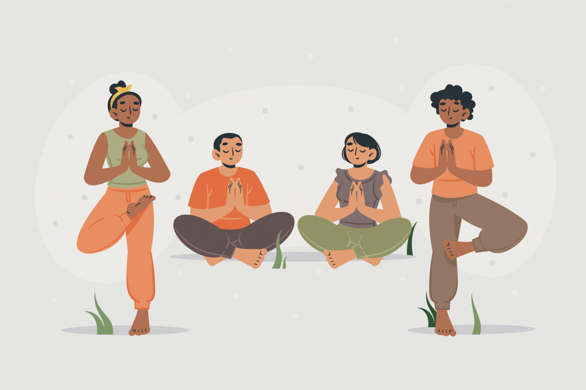

Mental Health & Wellness: A Comprehensive Guide
Quick Navigation
Understanding Mental Health

Mental health encompasses our emotional, psychological, and social well-being. It affects how we think, feel, and act as we cope with life's challenges. Good mental health is more than just the absence of mental illness—it's about thriving in your daily life, maintaining meaningful relationships, and feeling emotionally balanced.
Components of Mental Health
Mental wellness involves several interconnected components that work together to create overall psychological well-being. These include emotional regulation, which helps us manage our feelings appropriately; cognitive function, which involves clear thinking and decision-making; social connections that provide support and meaning; and resilience, which enables us to bounce back from adversity.
Research shows that mental health exists on a continuum, and everyone experiences fluctuations in their mental well-being throughout their lives. Understanding this helps reduce stigma and encourages people to seek help when needed.
Why Mental Health Matters
Mental health significantly impacts every aspect of our lives, from our relationships and work performance to our physical health and overall quality of life. When we prioritize mental wellness, we're better equipped to handle stress, make informed decisions, and maintain fulfilling relationships.
The Mind-Body Connection
Scientific research consistently demonstrates the strong connection between mental and physical health. Chronic stress and poor mental health can lead to serious physical ailments, including cardiovascular disease, weakened immune system, and digestive issues. Conversely, taking care of our mental health can improve physical health outcomes and increase longevity.
Effective Wellness Strategies
Developing and maintaining good mental health requires intentional effort and the right strategies. Here are evidence-based approaches that can significantly improve your mental well-being:
🧘 Mindfulness & Meditation
Regular meditation practice reduces stress, improves focus, and enhances emotional regulation. Even 10 minutes daily can make a significant difference.
🏃 Physical Exercise
Regular physical activity releases endorphins, reduces anxiety and depression, and improves overall mood and cognitive function.
😴 Quality Sleep
Adequate sleep (7-9 hours) is crucial for mental health, memory consolidation, and emotional stability. Good sleep hygiene is essential.
🤝 Social Connections
Maintaining strong relationships and social support networks provides emotional resilience and reduces feelings of isolation.
🥗 Nutritious Diet
A balanced diet rich in omega-3 fatty acids, whole grains, and vegetables supports brain health and mood stability.
📝 Journaling
Writing about thoughts and feelings helps process emotions, gain insights, and track mental health patterns over time.
Building Resilience
Resilience is the ability to adapt and bounce back from adversity, trauma, or stress. It's not something you're born with—it's a skill that can be developed through practice and the right mindset. Building resilience involves developing coping strategies, maintaining perspective during difficult times, and learning from challenges.
Mental Health in the Workplace
The workplace significantly impacts our mental health, and creating a mentally healthy work environment benefits both employees and organizations. Workplace stress, if left unmanaged, can lead to burnout, decreased productivity, and serious health issues.
Signs of Work-Related Stress
Common indicators include persistent fatigue, difficulty concentrating, increased irritability, changes in sleep patterns, and physical symptoms like headaches or muscle tension. Recognizing these early warning signs is crucial for taking preventive action.
Strategies for Workplace Wellness
Effective workplace mental health strategies include setting clear boundaries between work and personal life, taking regular breaks throughout the day, practicing stress management techniques, seeking support from colleagues or supervisors when needed, and utilizing employee assistance programs when available.
Organizations can support mental health by promoting work-life balance, providing mental health resources, creating supportive team environments, and reducing unnecessary workplace stressors through improved policies and procedures.
Getting Support and Resources
Seeking help for mental health concerns is a sign of strength, not weakness. There are numerous resources available for those who need support, ranging from professional mental health services to peer support groups and online resources.
Professional Help
Mental health professionals, including psychologists, psychiatrists, counselors, and therapists, can provide specialized treatment for various mental health conditions. They offer evidence-based treatments such as cognitive-behavioral therapy, medication management, and other therapeutic interventions.
Support Groups and Peer Support
Support groups provide opportunities to connect with others who have similar experiences. These groups can be found in communities, online, or through mental health organizations. Peer support can be incredibly valuable in the recovery process.
Crisis Resources
If you or someone you know is experiencing a mental health crisis, immediate help is available through crisis hotlines, emergency services, and crisis intervention teams. These resources provide 24/7 support for those in urgent need.
Remember that recovery is possible, and with the right support and treatment, people with mental health conditions can live fulfilling, productive lives. The key is to reach out for help when needed and to view mental health care as an essential part of overall wellness.